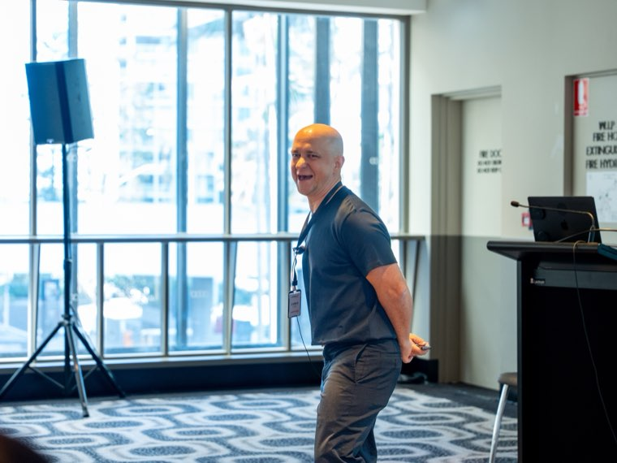
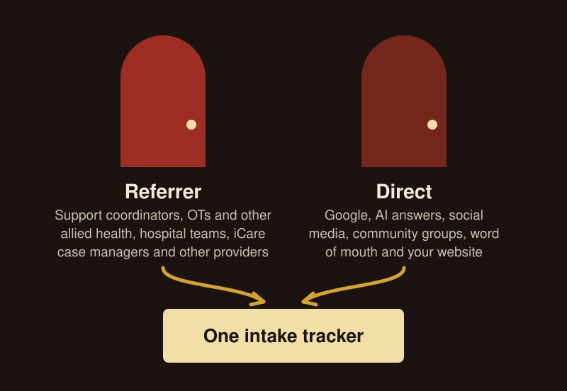
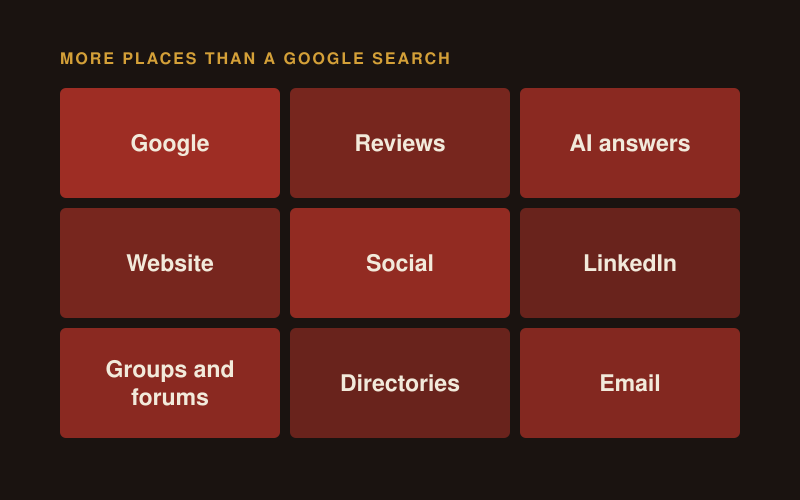
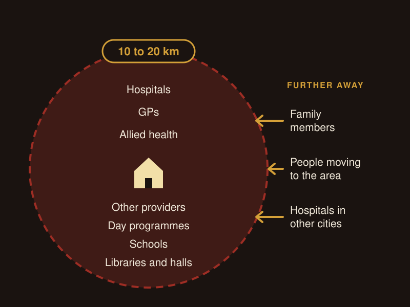
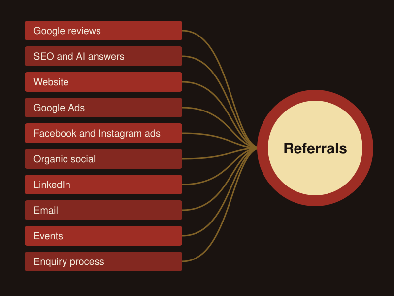
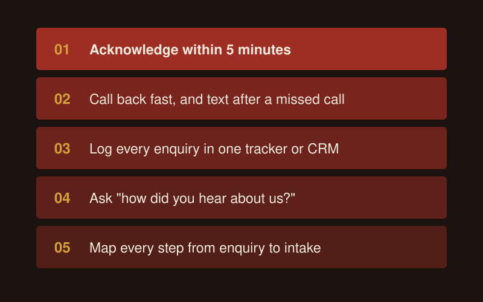
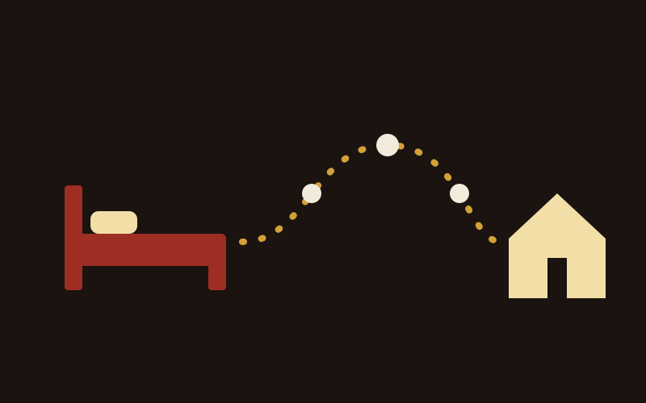
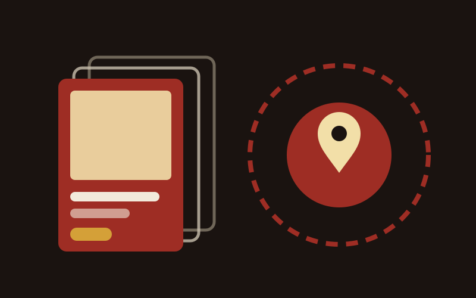

How to Get NDIS Clients From Hospitals
How to get NDIS clients from hospitals: what discharge planners, social workers and case managers want from a provider, and how to build the relationship.
Read more
To find NDIS clients, work both doors in. Every participant reaches you through a referrer or finds you directly. Look after a list of 20 active referrers within 10 to 20 km, give each one a reason to take your call, answer every enquiry within 5 minutes, and make sure families searching Google find reviews and a page for each service and area, or find real stories and human content on your social media accounts.

I run growth for NDIS providers as a boutique NDIS marketing agency, and this guide is the method I use with them, channel by channel.
NDIS providers find clients through two doors: a referrer sends them, or the participant or their family finds the provider directly. Referrers include support coordinators, OTs and other allied health, hospital teams, iCare case managers and other providers. The direct door is Google, AI answers, social media, community groups, word of mouth and your website.
Track which door each new client came through. Make referral source a required field in your CRM and ask every enquiry "how did you hear about us?" If the answer is a referral, ask who sent them. After three months you will know which door to put more work into.
The person receiving support is often not the person choosing it. I call these two groups Users and Choosers.
| Group | Who they are | How to talk to them |
|---|---|---|
| Users | The participant receiving the support | "You", "your home", "your week" |
| Choosers | Parents, partners, support coordinators, OTs, hospital discharge teams, iCare case managers | "The person you support", "your client", "their team" |
Name the audience of every email, page and ad before you write it.

Referrals are the fastest way to fill your first places, and they are one source among several. As I put it to one provider, "referrals are just one method of growth." The sector grew on referrals more or less by accident, and newer providers with better marketing now win clients from them.
I use a simple Pareto view. If referrals got you your first 20 clients, go hard on them. If 20 clients is all your business needs, you do not need a full growth plan, and I will tell you that. Past that point you need more than one source, because referrals depend on a handful of people who can change jobs or start sending to someone else.
Set your direction, niche, audience and message first, then add channels. Channels come fifth. A Facebook ad or Google campaign with no clear niche or message behind it costs money and brings the wrong enquiries.
Above all, humanise your brand. You will not win with a nameless, faceless organisation. I will die on this hill. Please do not think launching a website with stock photos and no real photos of you and your team will work. We are in the care industry. A sub-par website with real humans will beat an AI-generated, beautifully designed website with stock images every day.
Every channel sends people to your website, so get it right before you spend:
My NDIS website design service builds sites to this standard, and my guide to NDIS digital marketing strategy covers the plan around it.
Families and referrers find providers in many more places than a Google search. They search, scroll and discover like anyone else:
Referred families check you online too, before they call. The families around a participant are often older and still Googling.
The conversations about you in reviews, groups and forums can be positive or negative. Search your name across Google, Facebook groups and Reddit every month. Reply to every review within 48 hours, calmly. Answer a public complaint once, calmly, then move the detail to a phone call.

Show up on Google and in AI answers with a complete Google Business Profile, a steady flow of reviews and one page for each service and area. AI tools lean on reviews, directories and pages that answer the question in the first two sentences.
Then test it the way a family would. I ask ChatGPT, Perplexity, Gemini and Google 15 to 20 questions a family asks on their phone at night, fix the gaps, and ask again after 90 days. My NDIS SEO service does this work.
Google Ads work when people search for what you sell. A family searching for a SIL provider in their suburb this week is ready to talk. If few people search for your service in your area, Google Ads have little to work with.
My NDIS Google Ads service runs this, and my guide to attracting NDIS participants with Google Ads goes further.
Yes. Facebook and Instagram ads reach families before they search, and LinkedIn ads reach support coordinators and allied health. Meta does not let you target people with a disability, so the algorithm finds your audience through the volume and variety of your creative.
I start Meta ads at $1,000 a month in spend. My NDIS social media ads service runs Facebook, Instagram and LinkedIn, and my NDIS Facebook ads guide covers the setup.
Yes. Email keeps you in front of the referrers and families who already know you, for almost no cost per send.
My NDIS email marketing service sets up the lists and the newsletters.
Start local. Your first referral list is every person within 10 to 20 km of your service who meets someone like your next participant before you do. That is where your immediate referral opportunities sit:
Put every name in one tracker with their role, last contact and next reason to call. When you have one vacancy, skip the ads and phone this list first.
Then look further out, because someone hundreds of kilometres away can still be your next enquiry:
For people further away, your website and search results are the first contact. Build a page for each area you serve, list your service areas on your site and Google Business Profile, and explain how you help someone moving into the area.

Build a small number of deep relationships before a long list of names. Each referrer keeps a mental "top five" of providers they trust. Your job is to get into that five with the people who matter in your area.
I call them the red-hot 20. Pick 20 active referrers and give each one a useful touch every week: a call, a capacity update, a resource for their client, a coffee. That beats an email blast to 500 contacts.
Then audit each partner on three questions:
| Question | What it shows you |
|---|---|
| What do we get from them? | How many referrals they send, and what kind |
| What do we give them? | The help, updates and introductions you send their way |
| What could we ask for? | A referral, an introduction to their team, a review, a joint event |
Give first. Your time with your top 20 referral partners is often worth more than another month of ad spend: a visit, a useful resource for their client, a call when you have a place that suits someone they support. The same goes for events: skip the expo hall and get to the dinners with "the 10 people at the 10 tables that matter". Never pay or reward anyone for a referral itself.
When a business development manager leaves, their network can leave with them. So build the relationships at the level of the organisation. Introduce referrers to your intake team, your clinical lead and your house leaders, and put every contact in a shared tracker. My NDIS referrals and partnerships service builds the list, the red-hot 20 and the referral packs with your team.
A referral partner takes your call when you have something useful for them or their client. Go into every call with one reason:
The outreach order I use is coffee, then a call, then email. Phone first, and send a text after a missed call or after an event.
Say who the place is right for. "We've got capacity" tells a referrer you have room and nothing about who you are right for, so it brings referrals you then have to decline. Swap it for "we've got a spot opening for someone with complex needs in [area]", or something even more specific.
Be specific about your strengths too. "Nice isn't enough to be remembered." A referrer will forget "we have SDA houses". They will remember a provider in one region who supports two types of disability with a specially trained team.
Hospital teams refer when you show them care will continue at home at the standard the hospital set. Case managers, social workers, hospital OTs and discharge planners worry about readmissions and about care falling away once the person is home.
Open with their world, such as bed block, before you talk about your service. Then ask the easy question: "Do you have anyone coming up to a discharge?" My guide to getting NDIS clients from hospitals covers the full approach.
Every growth and marketing channel can lead to a referral in one way or another, because referrers see the same search results, feeds and inboxes as families. Run two games at once:
| Game | What it does | Examples |
|---|---|---|
| Short game | Fills the capacity you have now from your pipeline | Calls to your red-hot 20, the capacity wording swap, fast follow-up on every enquiry |
| Long game | Makes you the name in your area, for families and referrers | Every channel in the table below |
| Channel | How it feeds referrals |
|---|---|
| Google reviews | A coordinator reads your reviews before putting your name forward |
| SEO and AI answers | A referrer looking in an area they do not know finds your page |
| Website | A "Refer a participant" path makes the referral easy |
| Google Ads | A coordinator searching this week finds you first |
| Facebook and Instagram ads | Retargeting keeps your name in front of referrers who visited your site |
| Organic social | A family shares your post in a community group, and their coordinator remembers you |
| Referrers see your team's posts every week | |
| A monthly capacity update keeps you in their top five | |
| Events | A collaboration session puts 10 referrers at one table with your team |
| Enquiry process | A family who got a fast, kind response tells their coordinator |
My guide to the key areas for NDIS business growth covers the number to watch in each part of the business, and my NDIS marketing hub covers each channel.

An enquiry must receive an acknowledgement within 5 minutes and a call back fast, ideally within minutes or the first couple of hours. Calling it "enquiry handling" does not change the fact that it is sales, and a coordinator who sends the same request to several providers will often go with the first one to respond.
Measure from spend to clients signed. A low cost per lead means little if half the leads never get a call back. My NDIS sales and enquiry process service sets this up with your intake team.

Train every person who talks to families and referrers, from intake to house leaders. Frontline staff meet referrers every week, and with prompts and language for the ask they become a referral source.
My NDIS coaching and workshops cover sales, referrals, marketing and AI.
Self-managed and plan-managed participants can choose registered or unregistered providers for most supports. Participants with NDIA-managed funding can only use registered providers. So if you are unregistered, self-managed and plan-managed participants are your market, and the list of supports that need registration is growing.
The rules as at 8 November 2026, from the NDIA, the NDIS Commission and the Department of Health, Disability and Ageing:
These rules are changing in stages until 2030, so check the current rules for your support type with the NDIS Commission (opens in a new tab) before you plan your marketing around being unregistered.
Plan managers handle the participant's invoices and budget. Treat them as an admin relationship, and put your referral time into support coordinators, OTs and hospital teams. Support coordination is changing too: from 1 July 2028, the NDIA will appoint providers to a new support coordination and connection service, funded outside participant plans. Spread your referral work across every group so a change in one does not empty your pipeline.
If you are registered, say plainly that you serve all three. The funding line I use in ads is: "As a registered NDIS provider, we support self, plan and agency managed clients."
I work with provider owners, business development, marketing and intake teams on both doors. Pick one service or have me run the lot:
AI is built into every service. My AI and automation specialist and I set up AI tools for work your team already does, such as drafting ads and posts, following up enquiries and pulling reports together, and train your team to use them safely.
Expect a few months before referral work brings steady clients, because referrals come from trust and trust takes repeated contact. A provider with a suitable place and a warm list can fill it faster: phone the local referral list, use the capacity wording swap, and answer every enquiry within 5 minutes.
Yes. Support coordinators are one referral source. OTs and other allied health, hospital teams, iCare case managers, GPs and other providers also refer, and families find providers directly through Google, AI answers, social media, reviews and word of mouth. Spread your effort so one person changing jobs does not empty your pipeline.
Not for every support, but registration decides who you can serve. Participants with NDIA-managed funding can only use registered providers. Self-managed and plan-managed participants can use unregistered providers for most supports. SIL, SDA, behaviour support and plan management need a registered provider, and from 1 July 2027 registration expands to more higher-risk supports, such as personal care. Check the current rules for your support type with the NDIS Commission.
Only after the basics work. Set your direction, niche, audience and message, fix your website and tracking, and make sure every enquiry gets a call back fast. Then test Google Ads for people searching now, or Facebook and Instagram ads for people who have not searched yet. When you have only one vacancy, phone your referral list first.
Yes, when it shows real people. Families and referrers scroll like anyone else, and the algorithm shows a good post to people who do not follow you yet. Post real stories with consent, show your team, and take part in local community groups.
Start local, because referrers within 10 to 20 km are your immediate opportunities. Then plan for people further away: family members searching on behalf of someone near you, participants moving to your area, and hospital teams in other cities. A page for each area you serve is how they find you.
Say who the place is right for, in one line: "we've got a spot opening for someone with complex needs in [area]." Add what makes your team right for that person, such as experience with a specific disability. Then ask whether they have someone suitable coming up, and offer a walkthrough or a referral pack.

How to get NDIS clients from hospitals: what discharge planners, social workers and case managers want from a provider, and how to build the relationship.
Read more

How NDIS providers run Facebook and Instagram ads: setup, targeting, website or lead forms, compliance, and when LinkedIn ads reach referrers.
Read more

How to grow an NDIS business across six areas: referrers, intake, participant and staff retention, capacity and owner time, with a number for each.
Read more
Book a free growth audit and I'll show you which door your clients come through today, which channels are working and where you are losing them.
How do social media and LinkedIn bring in NDIS clients?
Organic social puts real people and real stories in front of families and referrers, and the algorithm shows a good post to people who do not follow you yet. A family member scrolling at night, or a coordinator between visits, can find you without searching.
LinkedIn is one of the main places referrers check you out, though not the only one. For a hospital push, connect with every discharge planner in your area over 2 to 4 weeks, then post about life after hospital. My NDIS social media and content service runs your organic channels, and my NDIS LinkedIn service builds owner and staff profiles and a posting routine.